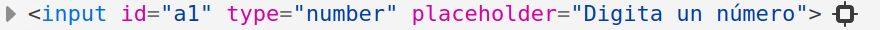

Tutorial para desarrollo web full-stack
Explico muchas cosas, como si nunca antes hubieras programado. Sin embargo, se espera entusiasmo, curiosidad (para buscar en la documentación) y un mínimo de inglés para poder conocer el significado de head, body, article, footer, etc.
Poné el cursor del mouse (o dedo si estás desde una pantalla touch) arriba de los links en color azúl para tener información extra. ¡Ojo! Los links en color celeste te llevan a otras páginas, para mostrarte links de interés y documentación vital para ser un buen desarrollador :)
Te recomiendo usar Visual Studio Code para desarrollar sitios webs. Es mucho mejor que el block de notas de tu sistema operativo y es lo mejorcito para codear, y muy flexible y adaptable a otros lenguajes (cómo C/C++, C#, Java, Python, etc). ¡Empecemos!
¿Qué es y como se escribe el HTML?
El código HTML nos sirve para crear los elementos de nuestro sitio web. Cada elemento tiene un nombre, cómo h1, p, a, etc. Estos nombres aparecen -en el código- entre "picos" de apertura y cierre.
- Signo menor que<
- Signo mayor que>
Encerrar un "nombre" entre picos de apertura y cierre se lo denomina etiqueta HTML. Estas etiquetas HTML abundan en los sitios webs actuales, y permiten crear títulos de distinta importancia, párrafos, links y más.
Ejemplo
¿Cómo se diseña una web?
Como estábamos diciendo, las etiquetas te permitirán crear objetos para colocar en su web. Pero el aspecto de estos objetos estarán determinados a tu gusto y con otro lenguaje: CSS.
Hoy por hoy es muy común que un diseñador "front-end" sepa programación y dos lenguajes o más.
Escribir CSS es como escribir en Inglés o Javascript (ponele), que dicho sea de paso, será otro lenguaje que tendrás que dominar en un futuro.
Supongamos que querés nombrar cada objeto con un identificador único. Tomando el ejemplo anterior, podríamos asignar un id (identificador) así:
Ejemplo
¡Apliquemos estilos!
Ojo, lo que te voy a enseñar ahora no va a funcionar sólo. De hecho, aún no te dije que el código HTML de tu sitio web debería estar en un archivo con extensión html. Por ejemplo, podrías crear un archivo llamado test.html ahora mismo, y pegar el código que escribí más arriba, con los IDs.
¡Entonces bien! Cada identificador en HTML puede ser editado desde el CSS, así que crea un archivo main.css y pega el siguiente código.
Ejemplo
Observá la sintáxis de CSS. Los IDs de HTML se referencian en CSS con el signo numeral, luego ponemos su nombre (debe coincidir con el escrito en HTML) y abrimos una llave. Entre las llaves de apertura y cierre están las propiedades del objeto que estamos creando, los cuáles se aplicarán a la etiqueta que tenga ese identificador en HTML.
Los comentarios en CSS se abren con /* y se cierran con */. Un comentario es una buena forma de explicar qué estamos haciendo en esa línea de código. :)
Ok... si abrís tu archivo test.html desde tu navegador preferido, no vas a ver ningún estilo, ni texto en cursiva o similar. Veamos un concepto más, muy importante.
Después, aprendamos la estructura principal de un archivo HTML y cómo ensamblar todo :).
Cajas comunes y bloques
Buenísimo, entonces si seguiste el tutorial al pie de la letra, tendrías un título y dos párrafos creados. Cada etiqueta HTML crea una caja. Hay cajas "comunes", que su tamaño es el justo y necesario para contener los objetos que tengan dentro, y cajas "de bloque". Éstas últimas tienen la propiedad CSS display: block; por defecto y ocupan todo el ancho que tengan disponible, cómo los títulos H1, H2, H3, etc.
Por esta razón, si vas al identificador de tu Titular H1 (en el CSS), y escribís dentro la propiedad text-align: center;, el titular se va a centrar horizontalmente en la pantalla, no así con otras etiquetas, cómo los links que son cajas comunes.
Ejemplo de caja de bloque
¡Hey! Ocupo todo el ancho que tengo disponible
El link ocupa sólo un pequeño espacio, aunque podríamos poner display: block; en su CSS, así:
En ese caso, el mismo link pero mostrado como bloque, sería así:
El link ya no ocupa sólo un pequeño espacio
¿Viste como el borde inferior ocupa todo el ancho? Eso demuestra como se expandió la caja que contiene el texto del link. Claramente el texto no ocupa todo el ancho por la simple razón de que no es una frase súper larga. Si querés ver más en detalle, hacé clic derecho en el link y luego Inspeccionar elemento. ¡Tu navegador te va a mostrar todo el código de esta página!
Ensamblemos todo
Ahora que sabés el concepto de cajas en forma de bloque, pasemos a unir el HTML con el CSS que estamos creando.
La primer parte de un archivo HTML sería el siguiente. La primer linea indica que el documento es de tipo HTML (5). Luego se abre la etiqueta HTML e indica el lenguaje de la página web.
Lo importante es lo que va entre nuestra cabecera (head). Allí estará el nombre de la pestaña en el navegador, la codificación del texto y los archivos CSS a utilizar, entre otras cosas que veremos mucho más adelante.
Prestá atención a los comentarios en HTML, que se crean de una forma diferente a la que te enseñé con CSS :O
Entonces bien, el código anterior no lo ve nuestro usuario pero nos sirve a nosotros para importar archivos extra CSS y Javascript, además de que Google también utiliza varios datos de nuestro head para posicionarnos en las búsquedas.
Veamos el resto del HTML, que es lo que verá el usuario en su pantalla.
Recordá que prácticamente todas las etiquetas en HTML se abren y se cierran en un órden determinado. Por ende, las etiquetas que abrimos deben cerrarse "de adentro para afuera", es decir que la primer etiqueta que se abre es "el padre", y se cerrará último.
Ejemplo
Si te trabaste, revisa este archivo comprimido zip que te preparé. Recordá mantener una estructura de proyecto prolija. Yo suelo usar ésta:
- css/(carpeta) Para los estilos
- img/(carpeta) Para las imágenes
- test.html(archivo) Mi página
-- Carpeta raíz --
El resultado del sitio que estamos armando

Algo así debería ser el sitio web que estamos haciendo
Las etiquetas y sus parámetros
La etiqueta de link, imágen, etc; no hacen nada por si solas. Todas las etiquetas pueden recibir parámetros, que son las palabras clave que están luego del nombre de la etiqueta en sí.
Ejemplo
La etiqueta img tiene, en este caso, dos parámetros:
- srcLa ruta a la imágen
- widthEl ancho de la imágen. La altura se ajustará para mantener la proporción, sin deformaciones.
Otros parámetros muy usados son href para referenciar una etiqueta HTML a algún link en particular, id y class.
El id ya sabés como se usa. Mientras que el id lo usás para identificar elementos HTML, las clases se usan muchísimo para darle estilos a los objetos.
Lo podés usar así:
La etiqueta style sirve para inyectar CSS puro dentro de un archivo HTML, aunque no es recomendable porque:
- Es complicado de leer en proyectos medianos y grandes.
- Suele ralentizar la carga del sitio, sobretodo si cargamos imágenes con la propiedad CSS background.
Es muy común que escribas un ID o Clase específico para un objeto. Aunque a veces es necesario, hacer ésto en exceso complica la lectura del código en proyectos medianos y grandes. Bah, en chicos también :P
Pensemos de forma modular
Suponete que estás creando un header para tu página. Querés que esté anclado arriba por más que hagas scroll, también querés un padding interno para que el texto no se pegue al borde de la pantalla.
Pero también querés hacer un footer con propiedades muy similares, sólo que no querés que el footer se ancle a ningún lado. Con que esté al final de la página, nos basta.
Ejemplo de CSS
Así debería lucir tu CSS, si pensamos de forma modular.
Esto está buenísimo, no sólo porque matás dos pájaros de un tiro, sino que acortás código y se vuelve más legible. Fijate que luego de declarar las propiedades de header y footer, escribo una propiedad (box-shadow) para darle sombra al header, y las próximas 3 líneas son para "fixear" la cabeza de la página arriba, a pesar de que el usuario haga scroll.
¿Y que onda con el padding? ¡Ajá! El padding lo vamos a usar mucho, así que en vez de poner esa propiedad en todos los objetos que lo necesiten, voy a crear una clase CSS para eso.
Esta clase la podés usar en cualquier objeto :)
Ejemplo para usar una clase
¿Viste que escribí var(--gap) en el CSS? Las variables en CSS son algo de hace pocos años, y (creo) dejaron a Less y Stylus como una "simple opción más" de darle estilos al HTML.
De hecho, todos los que me dicen que el CSS debería estar extinto es porque no saben ni la mitad de cosas que ofrece esta especificación. Sin embargo, les sugiero no fanatizarse y luego de dominar CSS, revisar otras tecnologías. Si te gusta este mundo, seguramente te quieras comer todos los tutoriales :D
Variables y unidades
Las variables en CSS aportan a la modularidad y mantenibilidad (¿esa palabra existe?) del código. No sólo porque podemos hacer que todos los objetos referencien a un color determinado, de forma que si al cliente no le gusta ese tono de azúl (por ejemplo) lo cambiamos con una línea de código, sino también porque las variables en CSS pueden almacenar un sinfín de tipos de datos distintos. Te listo algunos.
- pxPíxeles
- em1.6em = 1px
- vw ó vh
- Color hexadecimalColores de 6 caracteres
- Color rgb ó rgbaColores que podés manejar cambiando canales
Así que si quisieras guardar unas variables, deberías hacerlo dentro del selector :root, así:
Las variables se crean con dos guiones medios y su nombre. Luego dos puntos y el valor que tiene que almacenar :)
Para usar ese valor, llamamos al procedimiento var(), así:
Si buscás en inglés lo que querés hacer en CSS, por ejemplo "columns css" y le agregás "w3s" al final de la búsqueda, vas a encontrar de todo y vas a avanzar más rápido.
Habiendo dado una breve introducción de HTML y CSS y pasando por varias cosas importantes, te invito que sigas buscando por tu cuenta. Ahora vamos a ver cómo trabaja un servidor y qué hay que entender para subir nuestro sitio web al mundo.
El servidor
Un servidor puede ser -casi- literalmente cualquier máquina conectada a internet mediante un router y con un port-forwarding configurado.
El servidor es el encargado de enviar los datos que le pide el cliente, es decir, el usuario visitante de tu sitio web.
Cuándo avances un poco más, verás que el servidor también soporta distintas bases de datos y lenguajes de programación distintos. Hoy lo más normal es desarrollar tu sitio web en NodeJs o PHP, aunque hay gente que programa con Python o Ruby-on-rails <3
En primer lugar, esta PC debe tener un software que sirva los documentos solicitados al cliente, como pueden ser Apache 2 y Nginx. Esto es más que suficiente para servir una página estática como la que estamos haciendo, y servidores que soporten ésto y NodeJs ó PHP como lenguaje de programación son gratuitos. No es lo mejor pero es suficiente para comenzar con nuestros pequeños proyectos.
Comúnmente Apache o Nginx buscan el archivo index.html para tu página principal, así que cuidado si subes la web que estábamos haciendo con el nombre de test.html. No explotará nada, pero el servidor no encontrará la home del sitio web.
En teoría, un servidor puede tener instalado cualquier aplicación, aunque los planes de hosting chicos son muy limitados en éste aspecto y apenas dejan subir un sitio web estándar en NodeJs o PHP (además de incluir HTML y CSS, claro).
Te recomiendo hostings como 000WebHost, que tiene hosting gratis y sobra para trastear con estas cosas. Cuándo comiences a ver programación en NodeJs, Heroku en combinación con MongoDB Atlas te permitirá tener tu app NodeJs y tu base de datos MongoDB.
El dinamismo
El código Javascript le da cierto dinamismo a nuestro sitio web, porque permite un manejo más "reactivo" de los eventos que suceden en runtime.
Javascript tiene acceso completo al DOM, y es por eso que podemos llamar a procedimientos/funciones para que cambien objetos de nuestra página con un clic del usuario. Hagamos una sencilla calculadora.
Aaah, Javascript es hermoso... Si ejecutaste este código en un archivo HTML para probarlo, te habrás dado cuenta que si escribís 2 en un campo "number" y 3 en el otro, la consola te habrá juntado ambos números, por lo que verías 23, no 5.
Esto es porque si bien, las etiquetas input son de tipo "número", en realidad ésto nos sirve sólo para mostrar un teclado con números en dispositivos que tengan teclado virtual y poco más.
Los valores dentro de esos dos inputs llegan a Javascript como string, osea texto. Javascript suma texto (en realidad, lo concatena), pero no es lo que nosotros queremos.
Para que pueda sumar estos valores, usá la función parseInt() así:
Mucho mejor, ¿no? Ahora hace lo que debería hacer...
Veamos que es esto de document y getElementById.
Objetos
Javascript hizo un avance grande en poner los objetos como algo del día a día. Es algo que ya se veía venir con las estructuras de datos de lenguajes viejísimos como C.
Suponete que querés re-crear a tu mascota en Javascript, como un objeto. Probablemente tu perro, gato, etc; sea mucho más que un objeto, pero en Javascript así se denominan. Si tuviera que crear un objeto de mi gata, sería algo así
Ejemplo
Con let y un nombre (sin espacios ni tildes o símbolos raros) creamos una variable. Podría haber creado una constante, pero eso me hubiera imposibilitado cambiar las propiedades de mi gata en un futuro, por la obviedad de que creé "algo constante".
Verás, abro unas llaves y luego la estructura es:
- propiedad1:contenido,
- propiedad2:contenido
Cerrás la llave, y listo. La última propiedad (o "key") no debe tener una coma al fin de la línea.
Todo lo que encierro entre comillas (ya sean simples o dobles) son strings, es decir, texto. El número 16 lo puse sin comillas para que JS lo tomará como un número, no una letra.
De ésta forma, si quisiera saber la edad de mi gata, podría ejecutar un console.log:
Que fácil es acceder a un objeto, ¿no? Un puntito y listo :P
Bueno, el objeto document es igual de fácil. Javascript tiene procedimientos nativos para hacerte la vida más fácil. En los objetos podés almacenar funciones dentro, además de simples nombres, tamaños y edades.
La función getElementById() recibe un string como parámetro, y te devuelve un dato. Ese dato que "sale" de la función la podemos almacenar en una variable, como había hecho en el módulo anterior con a1 y b1. Si no guardamos la devolución de una función, ese dato quedará en el abismo...
Fijate que la función getElementById(), obtiene el ID completo, osea que los parámetros HTML cómo los que mencionaba antes están a completa disposición.
Probá de obtener una etiqueta, asignando un ID desde el HTML y obteniendolo con Javascript. ¡Después hacé un console.log de eso y mirá lo que te encontrás!
Yo hice esa prueba con el input a1 del capítulo anterior, así:
Obtuve ésto:
Cada parámetro en esa etiqueta puede ser obtenida con Javascript. Si seguimos con el concepto de "todo es un objeto", nos daremos cuenta que JS trata ese input así:
Por lo cuál, podemos obtener el ID (por dar un ejemplo) e imprimirlo por la consola de nuestro navegador de la siguiente forma:
Volviendo al tema anterior, es muy común almacenar la devolución (return) de una función en una variable. Esto se suele hacer cuándo este dato recibido se va a procesar más tarde.
Ejemplo
¿Te aburre un poco imprimir todo por consola? Dentro de poco vamos a hacerlo con Vue.js y de forma reactiva, por lo que quiero enseñarte la base de Javascript para saltar directo a Vue :)
En runtime
Si tengo suerte, seguramente te preguntaste porqué la calculadora que programé antes tiene dos constantes y cómo hago para "editar" estos valores, ya que puedo cambiar los números de los input:number y de hecho esos valores se ven en las constantes a1 y b1. ¿No era que las constantes nunca cambian?
En realidad, esos valores nunca se editan :O El tema está en que toda la información que almacena una función internamente se destruye al finalizar. Osea que luego de que Javascript ejecutó la última línea de mi función calc(), las constantes y la función en sí desaparecieron de la memoria de nuestro sistema.
Por ende, la próxima vez que se llame a la función, se crearán nuevas constantes con los datos que contengan a1 y b1, por lo que nunca hay una edición, sino que se destruyen al finalizar las órdenes y se crean nuevas constantes al re-llamar la función. It's magic!
Esto que digo es vital para entender un poquito más el scope en los lenguajes de programación.
A veces utilizo constantes cómo parte de la "programación defensiva", un TOC que me dio un profesor de tanto que insistió.
Evita la edición de un dato que no debería cambiar en runtime, en el hipotético caso de que lo haga sin querer :P
La imágen que acompaña este título explica más o menos bien lo que sería un desperdicio de memoria. En C y C++ uno puede pedir un espacio de memoria dentro de una función que, si no se maneja correctamente, no se destruye luego de finalizar la función.
Otra cosa que tienen que ver con las funciones es que al declararla, por ejemplo:
Se espera que los parámetros nombre y apellido se envíen en órden, al llamar a la función así:
Además, tené en cuenta que return le da la posibilidad a la función de devolver un dato, pero también la finaliza, por lo cuál es recomendable disponer los return como hice en el ejemplo anterior. No hay necesidad de englobar return false; dentro de un condicional else.
No vamos a aprender JQuery
Hace mucho, tomé un curso dónde me enseñaron JQuery y luego Angular, que es de otro planeta. Usé JQuery en mi primer proyecto profesional pero se quedó muy corto para lo que tenía que hacer. De ahí salté a React y Vue.js. Me quedé con Vue.js porque es muy fácil de implementar (usar) y además puede adaptarse muy rápido incluso a sitios viejos y sin extrema necesidad de configurar otros componentes externos, como babel o webpack.
¡Así que bienvenido a Vue.Js! Crear una instancia de Vue.Js es muy fácil, pero primero veamos porqué usar Vue.js.
Si tu sitio web (que cuándo es algo serio le decimos "aplicación" o "app") necesita manejar datos en runtime o solicitar datos de otra web, es probable que Vue.js, React y Angular te hagan todo más fácil.
Configurar una vista de Vue.js
Entre tus etiquetas head, incluí el Javascript necesario, osea incluí el framework Vue.js y Axios.
Instalá el plugin de Vue.Js para Firefox o Chrome, de forma tal que puedas acceder a tu aplicación Vue.js de forma más conveniente, desde una pestaña de las Herramientas de Desarrollador (apretando F12).
Una vez que tengas Vue.js y Axios entre tus etiquetas head, podés instanciar Vue en una variable o constante, y luego pasarle un objeto como parámetro.
Ejemplo
Si creás un objeto nuevo en HTML con el identificador "bitcoinApp", podrías acceder a toda la información presente en bitcoinApp.data.
Consumir datos de otra web
Consumir datos de otra web es una genialidad. Es parte del concepto "database as a service" y podría facilitarte muchas horas (o días) de desarrollo. Cuándo un servicio/API así está disponible, se usa y listo.
Hace mucho tiempo que perdió (algo) de importancia el hecho de "sé desarrollar cualquier cosa y lo voy a hacer". Ahora es más importante hacer software rápido, así que si hay una API gratis y te conviene, ¡usala!
Consumir datos con Vue.js y Axios es muy fácil. Se trata de que Axios haga una llamada AJAX a una URL y recopile toda la información.
Vamos a usar la API pública de Bitstamp, para saber el precio del Bitcoin actualmente.
Podemos hacer un pedido a la siguiente URL para saber el precio del Bitcoin: https://www.bitstamp.net/api/v2/ticker/btcusd. Fijate el link a la API que dejé en el párrafo de arriba, porque hay mucha más información que te puede dar Bitstamp.
El código que hace la llamada a esa dirección es el siguiente:
Ésto tenés que ponerlo dentro de una función (yo la nombré getBtc())y dentro del objeto methods {}. Usá la función created() para ejecutar getBtc() apenas se cree la instancia Vue.js. ¡Mirá como lo armé!
Pero hay un problema. La respuesta (response.data) tendría que guardarse en btcData. Sabiendo que a btcData accedés desde el método con this.btcData, te invito a arreglartelas para que hagas un console.log(btcData) y puedas ver la información que obtuviste desde la API.
Ejercicio: Consumir datos de otra web
El módulo 15 que expliqué recién, tiene un problema. La respuesta (response.data) tendría que guardarse en btcData. Sabiendo que a btcData accedés escribiendo this.btcData, hacé un console.log() para ver la información obtenida desde la API.
Acceder a los datos de Vue.js
Si llegaste acá, supongo que ya podés ver un btcData rico en contenido desde tu inspector Vue (plugin). Ahora resta acceder a este contenido y nada más.
¿Te acordás de la propiedad delimiters que tenía dos guiones bajos? Esos dos guiones bajos los uso para que no tener conflicos con Handlebars, un motor de plantillas que uso cuándo programo en NodeJs. Entonces, esos guiones bajos los uso como apertura y cierre de "las etiquetas de Vue.js".
Si quería acceder a btcData.last (el último precio de Bitcoin), originalmente (si no escribiera la propiedad delimiters) lo haría así:
Pero ahora lo hago así:
Vos hacelo "por defecto" o cómo lo hago yo, realmente no te cambia en nada, salvo que las llaves te hagan conflicto con otra cosa (en mi caso, Express Handlebars).
¡Ojo! Vas a poder acceder desde btcData exclusivamente desde la etiqueta HTML identificada como "bitcoinApp". Hasta dónde sé, no se pueden compartir variables entre distintas instancias Vue.js ni identificadores, salvo que crees una variable en Javascript y luego te referencies a ella desde cada instancia Vue (por separado).
Ejemplo
Este ejemplo, igualmente, no lo recomiendo. Pero cada quién...
Arrays
Los arrays/vectores/arreglos (es lo mismo, dicho en distintos idiomas) son bloques en memoria. Pueden tener varias celdas, dentro de cada celda hay o podría haber información.
Ejemplo
Supongamos que tenemos un array de 3 posiciones o "celdas" que contienen un dato u objeto.
¡Es tiempo de una analogía! Ahora imaginate 3 Mamushkas, que dentro tienen un papelito escrito (dato), u otra mamushka (objeto).
Fin :O
En C y derivados, se necesita especificar el tipo de dato de las variables, constantes, vectores y matrices; debido a que es un lenguaje "fuertemente tipado".
Ejemplo en lenguaje C/C++
Sin embargo, javascript no es un lenguaje fuertemente tipado, por lo cual una variable puede contener un string (texto) y luego un número. Hacé la prueba:
Entonces un array de Javascript lo definimos así:
A los vectores, podemos acceder con un subíndice, así:
Es muy común que necesitemos añadir celdas/espacios/bloques a un vector. Podemos utilizar push().
También podemos pushear un objeto dentro de ese espacio:
Veamos qué son los iteradores.
Iteremos
Los bucles son como tener una carrera con varias vueltas. La carrera puede parar después de 20 vueltas (se sabe cuándo termina) o en caso de que llueva (no se sabe exactamente cuándo termina).
Para el primer caso, tenemos los bucles for(), mirá:
El bucle while() se encarga de iterar mientras la condición que esté evaluando sea verdadera. Básicamente, el while() es un if pero que se repite n veces.
Ejemplo
Simulá que sos el inspector de la carrera y ponés rain = false, desde la Consola en Herramientas del desarrollador (Firefox/Chrome).
Aprendamos NodeJs
NodeJs es como escribir Javascript pero del lado del servidor. Originalmente Javascript era sólo para el front-end, es decir, para hacer que la web sea más linda.
Ahora, si sos front-end developer, no será tan difícil aprender back-end gracias a NodeJs. La sintáxis es la misma, así que tenemos medio trabajo hecho.
Una recomendación
Haría un tutorial de NodeJs + MongoDB si me creería capaz de superar en calidad al maestro Fazt, pero no conozco mejores tutoriales para ésto. Por ende, les dejo dos tutoriales para que aprendan desde cero la programación en NodeJs. Recomiendo comenzar por el primero, agarrarlo en varios días hasta entender casi todo...
¿Qué más podríamos ver?
Enviá un email a santiagogimenez@outlook.com.ar con sugerencias.